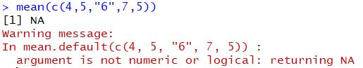
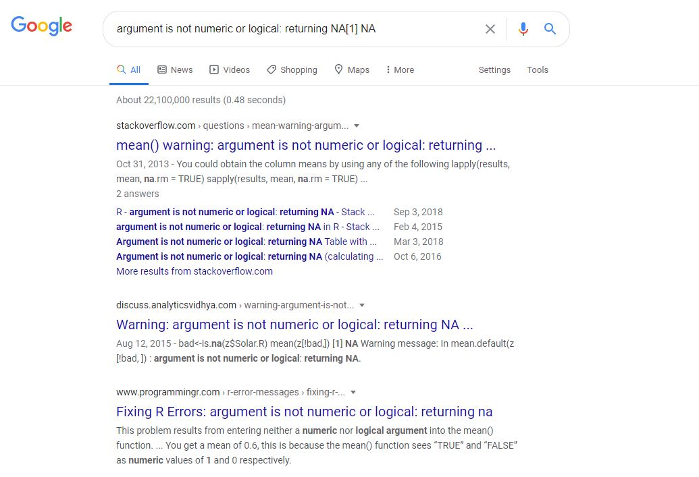
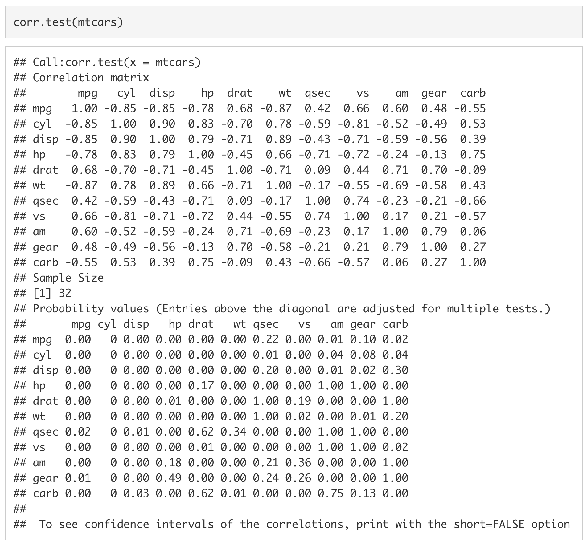
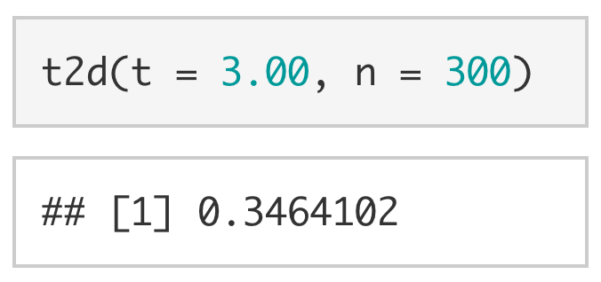
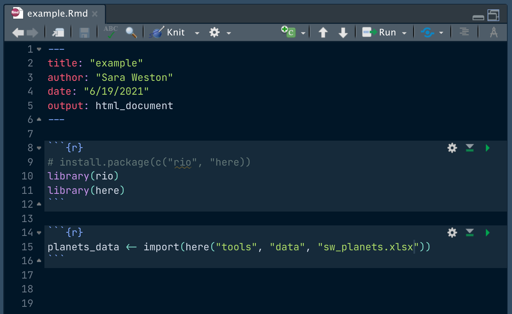
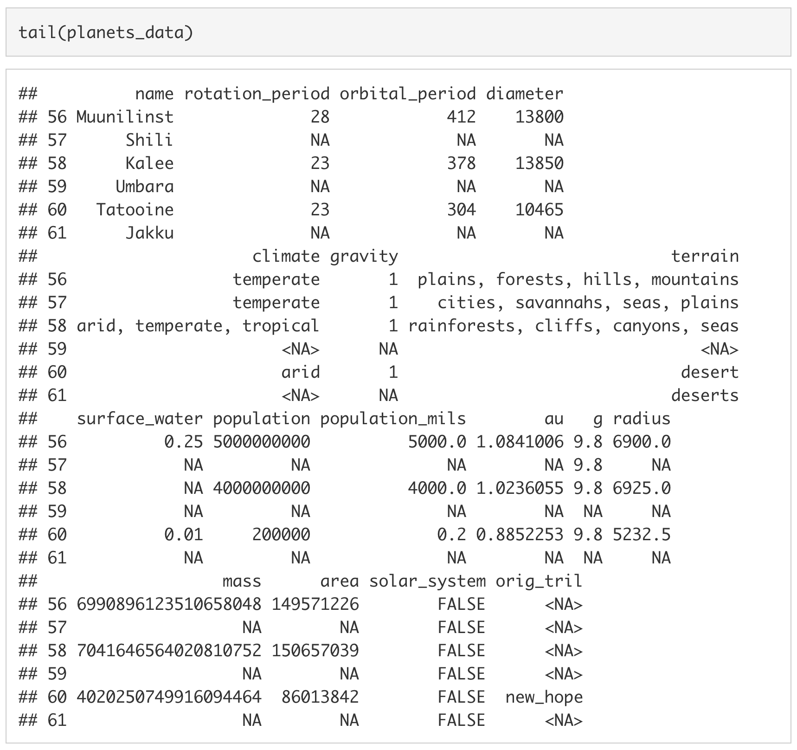

ABCD Workshop Tutorials
2021-07-08
Chapter 1 Introduction
This is a guide to the resources & tutorials from the 2021 MDC ABCD Workshop. Check back here for updates as the workshop progresses!
<!--chapter:end:index.Rmd-->
---
title: 'Introduction to R and RStudio'
output:
html_document:
theme: cosmo
toc: yes
toc_depth: 3
toc_float: yes
pdf_document:
toc: yes
toc_depth: '3'
word_document:
toc: yes
toc_depth: '3'
editor_options:
chunk_output_type: console
---
# Purpose
The purpose of this tutorial is to start building and strengthening foundational coding skills in R. We take a functional and active approach to learning R. We believe that the easiest way to *learn* R is by *using* R. Giving you some building blocks and suggesting some strategies for overcoming common coding obstacles will allow you to begin exploring the language. You never need to actively memorize code chunks or functions. You will become proficient naturally with many hours of practice. Therefore, the goal of this tutorial is to expose you to what R can do so that you know what tools you have at your disposal when you are later working through a problem.
Today's tutorial will cover:
1. [How to download and install R and RStudio](#gs)
1. [The panes of RStudio](#rstudio)
1. [How to create and use R Markdown Documents](#rmarkdown)
1. [Arithmetic commands](#ac)
1. [(Some of) the different types of variables in R](#variables)
1. [What functions are and how to use them](#functions)
1. [How to install and load packages](#packages) and...
1. [How to import data into R](#data)
At the end of this tutorial is a set of [Minihacks](#minihacks). Minihacks are small coding exercises intended to test your knowledge of the day's material.
_Note:_ This tutorial has been modified from labs created by Cameron Kay and Sarah Dimakis for [PSY 611 (Data Analysis I; Fall 2020)](https://uopsych.github.io/psy611/).
***
# Getting Started {#gs}
So what is R?
In the simplest possible terms, R is a programming language used for conducting analyses and producing graphics. It is substantially more flexible than GUI-based statistics programs (e.g., SPSS, LISREL) but less flexible than other programming languages. This lack of flexibility is on purpose; it allows the code to be written in a far more efficient and intuitive way than other programming languages.

Only one piece of software is required to get started using the R programming language and, confusingly, it is also called R. I will refer to it here as the *R Engine*. The R Engine essentially allows the computer to understand the R programming language, turning your lines of text into computer operations. Unlike other popular statistics programs (e.g., SPSS, SAS), the R Engine is free. [Instructions for downloading the R Engine](#download_r) are below.
A second piece of software that is not required to use R but is nonetheless useful is [RStudio](https://www.rstudio.com). [RStudio](https://www.rstudio.com) is an *integrated development environment* (IDE) or, in potentially overly simplistic terms, a tool that makes interacting with the R Engine easier. [Instructions for downloading RStudio](#download_rstudio) are also below.
## Downloading the R Engine {#download_r}
1. Navigate to the webpage for the [Comprehensive R Archive Network](https://cran.r-project.org) (commonly referred to as CRAN).
1. Under "Download and Install R" click the appropriate link for your operating system. For example, if you are using a Mac, you would click on [Download R for (Mac) OS X](https://cran.r-project.org/bin/macosx/).
1. Click the link for the latest release. As of writing this, the newest package is `R 4.0.2. "Taking Off Again"` (all version nicknames are references to the [Peanuts comic strip](https://twitter.com/snoopy/status/976452382480531458)). I would click `R-4.0.2.pkg` to start the download.
1. Once the file is downloaded, click on it to open it. Your operating system should guide you through the rest of the installation process.
*Note.* The same steps are used to update the R Engine: You install a new version and replace the old version in the process.
## Downloading RStudio {#download_rstudio}
<!--1. Navigate to the webpage for [RStudio](https://www.rstudio.com).
1. Click [Download RStudio](https://www.rstudio.com/products/rstudio/download/).
1. Click the [Download](https://www.rstudio.com/products/rstudio/download/#download) listed under the free version. For our purposes (and, in fact, for most people's purposes) the free version is all that is needed.-->
1. Navigate to the webpage for the free version of [RStudio](https://www.rstudio.com/products/rstudio/download/#download). For our purposes (and for most people's purposes) the free version of [RStudio](https://www.rstudio.com/products/rstudio/download/#download) is all that you need. The available installers are listed at the bottom of the page under the header "Installers for Supported Platforms."
1. Select the installer for your operating system. Since I am using Windows 10, I would click `RStudio 1.3.1093 - Windows 10/8/7 (64-bit)`.
1. Once the file is downloaded, click on it to open it. Your operating system should guide you through the rest of the installation process.
*Note.* To update [RStudio](https://www.rstudio.com) after it is already installed, all you have to do is navigate to `Help > Check for Updates` in the menubar.
***
# Features of RStudio {#rstudio}
As shown in the image below, an [RStudio](https://www.rstudio.com) session is split into four sections called panes: [the console](#rstudio_console), the [source pane](#rstudio_source), the [environment/history pane](#rstudio_environment), and the succinctly named [files/plots/packages/help pane](#rstudio_files).

## The Console {#rstudio_console}
In RStudio, the console is the access point to the underlying R Engine. It evaluates the code you provide it, including code called using the [the source pane](#rstudio_source). You can pass commands to the R Engine by typing them in after the `>`.

Think of the Console like a texting app (or for those who grew up in the 90s, AIM). The Console is where you send messages to your friend, R, and they (sometimes) respond. Once you've sent a message, you can no longer edit it. And once it's been said, you can't take it back.
## Source {#rstudio_source}
The source pane shows you a collection of code called a script. In R, we primarily work with `R Script` files (files ending in `.R`) or `R Markdown` documents (files ending in `.Rmd`).

If the Console is your texting app, then the Source pane is where you can draft your message, edit it, make sure it comes across as friendly and not passive-aggressive, etc.
These files can be saved and restored later. This is really useful if (1) you plan on spreading out your work across more than one day, (2) you want to keep track of what analyses you've run and the way you set up those analyses, or (3) you want to share your analysis with collaborators or readers. Perhaps one of these applies to you.
You can send code from Source to the Console using Command+Enter (Mac) or Ctrl+Enter (PC).
## Environment/History {#rstudio_environment}
The environment/history pane shows, well, your environment and history. Specifically, if you have the "Environment" tab selected, you will see a list of all the variables that exist in your global environment. If you have the "History" tab selected, you will see previous commands that were passed to the R Engine.

## Files/Plots/Packages/Help {#rstudio_files}
The final pane---the files/plots/packages/help pane--includes a number of helpful tabs. The "Files" tab shows you the files in your current working directory, the "Plots" tab shows you a preview of any plots you have created, the "Packages" tab shows you a list of the packages currently installed on your computer, and the "Help" tab is where help documentation will appear. We will discuss packages and help documentation later in this lab.

***
# Projects {#projects}
Whenever you start a new research project, you should create a new *R Project.* The R project is a working directory where your `.RProj` file, scripts, data, images, etc. will live. Creating a folder that contains all of the files for your new research project will keep you organized and make it easy for others to download and reproduce your work. We will open up a new project for this workshop and call it `ABCD 2021`.
## Creating a new project {#create_project}
1. In order to create a new project in RStudio, click on the R icon with the plus sign in the top left corner of RStudio.

2. Click on `New Directory` -> `New Project`. Name your new directory `ABCD 2021` and store it somewhere on your computer using the `Browse` button. I would recommend storing it on your desktop.

## Adding folders to a project
1. Once you have a new directory, you can add folders to it. Let's add a folder for `tools`. You can add a folder by clicking on `New Folder` in the [files/plots/packages/help pane](#rstudio_files).

2. You can nest folders within folders. For example, inside the `tools` folder, I want to create two more folders: a `scripts` folder and a `data` folder.

***
# R Markdown {#rmarkdown}
`R Markdown` allows you to integrate formatted text (like in a Word or Google Doc), code, and code output into a single document. These documents can take many forms, including:
* html files (like this one), which allow for some interactive components, like showing/hiding code or interactive figures,
* pdf files,
* word/rich-text-format (rtf) files, for manuscripts
* and [more](https://bookdown.org/yihui/rmarkdown/).
The following section will guide you the process of creating an `R Markdown` document.
## Creating an R Markdown Document
1. Click on the blank piece of paper with the plus sign over it in the upper left-hand corner of RStudio.
2. Click on `R Markdown...`.
<img src="/Users/millslabmanager/Documents/GitHub/2021-tutorials-presentations/markdown_files/rmarkdown/lab1_menu_an.png" width="250px" style="display: block; margin: auto;" />
3. Enter the title of document and your name. I have chosen to title the document `example`.
<center>

</center>
4. Save your RMarkdown document by clicking on `File` -> `Save`. I'll save this `tools` -> `scripts` folder in my `ABCD 2021` project.
## Using an R Markdown Document
The content of `R Markdown` documents can be split into two main types. I will call the first type *simple text*. Simple text will not be evaluated by the computer other than to be formatted according to markdown syntax. If you are describing analytic decisions or interpreting the results of an analysis, you will likely be using simple text.
Note: _If a comment takes up more than a line, write it in simple text, not as an `R` comment._ Simple text can help ensure your documents are easily readable. R comments (prefaced using `#`) are more difficult to read and extend off the page in some Markdown formats.
Markdown syntax is used to format the simple text, such as italicizing words by enclosing them in asterisks (e.g., `*this is italicized*` becomes *this is italicized*) or bolding words by enclosing them in double-asterisks (e.g., `**this is bold**` becomes **this is bold**). For a quick rundown of what you can do with R Markdown formatting, I suggest you check out the Markdown section of the [R Markdown Cheat Sheet](https://www.rstudio.com/wp-content/uploads/2015/02/rmarkdown-cheatsheet.pdf).
In addition to simple text, `R Markdown` documents support R code using "chunks". A chunk is a section of text that the document recognizes as code, rather than simple text. It will be set off in the final version of the document through different formatting. In contrast to simple text, the R code chunks **are** evaluated by the computer. The chunks are surrounded by ` ```{r} ` and ` ``` `. In the example image below, the `1 + 2` in the R Code chunk will be evaluated when the document is "knitted" (rendered).
<center>

</center>
## Knitting an R Markdown Document
In order to knit an R Markdown document, you can either use the shortcut `command + shift + k` or click the button at the top of the R Markdown document that says `Knit`. The computer will take several seconds (or, depending on the length of the R Markdown document, several minutes) to knit the document. Once the computer has finished knitting the document, a new document will appear in the same location that the `R Markdown` document is saved. In this example, the new document will end with a `.html` extension.
<center>

</center>
As shown in the above image, the simple text in the `R Markdown` document on the left was rendered into a formatted in the knitted document on the right. The equation in the code chunk was also evaluated in the knitted document, returning the value `3`.
***
# The Basics of Coding in R
## Arithmetic commands {#ac}
As mentioned above, you can pass commands to the R-engine via the console. R has arithmetic commands for doing basic math operations, including addition (`+`), subtraction (`-`), multiplication (`*`), division (`/`), and exponentiation (`^`).
<img src="/Users/millslabmanager/Documents/GitHub/2021-tutorials-presentations/markdown_files/arithmetic/lab1_addition.png" width="175px" /><img src="/Users/millslabmanager/Documents/GitHub/2021-tutorials-presentations/markdown_files/arithmetic/lab1_subtraction.png" width="175px" /><img src="/Users/millslabmanager/Documents/GitHub/2021-tutorials-presentations/markdown_files/arithmetic/lab1_multiplication.png" width="175px" /><img src="/Users/millslabmanager/Documents/GitHub/2021-tutorials-presentations/markdown_files/arithmetic/lab1_division.png" width="175px" /><img src="/Users/millslabmanager/Documents/GitHub/2021-tutorials-presentations/markdown_files/arithmetic/lab1_exponentiation.png" width="175px" />
R will automatically follow the PEMDAS order of operations (BEDMAS if you are from Canada or New Zealand). Parentheses can be used to tell R what parts of the equation should be evaluated first. As shown below and as expected, `(10 + 5) * 2` is not equivalent to `10 + 5 * 2`.
<img src="/Users/millslabmanager/Documents/GitHub/2021-tutorials-presentations/markdown_files/arithmetic/lab1_paren.png" width="175px" /><img src="/Users/millslabmanager/Documents/GitHub/2021-tutorials-presentations/markdown_files/arithmetic/lab1_noparen.png" width="175px" />
## Creating Variables {#variables}
You can create variables using the assignment operator (`<-`). Whatever is on the left of the assignment operator is saved to name specified on the right of the assignment operator. I like to imagine that there is a box with a name on it and you are placing a value, inside of the box. For example, if we wanted to place `10` into a variable called `my_number`, we would write:
<img src="/Users/millslabmanager/Documents/GitHub/2021-tutorials-presentations/markdown_files/assignment/lab1_assign.png" width="450px" />
If we want to see what is stored in `my_number`, we can simply type `my_number` into the console and press `enter`. We are essentially asking the computer, "What's in the box with `my_number` written on it?"
<img src="/Users/millslabmanager/Documents/GitHub/2021-tutorials-presentations/markdown_files/assignment/lab1_peek.png" width="450px" />
If we want to overwrite `my_number` with a new value, we simply assign a new value to `my_number`.
<img src="/Users/millslabmanager/Documents/GitHub/2021-tutorials-presentations/markdown_files/assignment/lab1_reassign.png" width="450px" />
Looking at `my_number` again, we can see that it is now `20`.
<img src="/Users/millslabmanager/Documents/GitHub/2021-tutorials-presentations/markdown_files/assignment/lab1_peek2.png" width="450px" />
We can treat variables just like we would the underlying values. For example, we can add `5` to `my_number` by using `+`.
<img src="/Users/millslabmanager/Documents/GitHub/2021-tutorials-presentations/markdown_files/assignment/lab1_var_add.png" width="450px" />
Keep in mind, the above operation does not save the result of `my_number + 5` to `my_number`. To do that, we would have to assign the result of `my_number + 5` to `my_number`.
<img src="/Users/millslabmanager/Documents/GitHub/2021-tutorials-presentations/markdown_files/assignment/lab1_reassign_add.png" width="450px" />
If we want to remove a variable from our environment, we can use `rm()`.
<img src="/Users/millslabmanager/Documents/GitHub/2021-tutorials-presentations/markdown_files/assignment/lab1_rm.png" width="450px" />
### Types of Variables
<!--If a variable only has one value associated with it, we call it a `scalar`.-->In R, there are four basic types of data: (1) `logical` values (also called `booleans`), which can either be `TRUE` or `FALSE`, (2) `integer` values, which can be any whole number (i.e.., a number without digits after the decimal place), (3) `double` values, which can be any number with digits before and after the decimal place, and (4) `character` values (also called `strings`), which are pieces of text enclosed in quotation marks (`"`).
| Type | Examples |
|-----------------|----------------------|
| Logical/Boolean | `TRUE`, `FALSE` |
| Integer | `10L`, `-10L` |
| Double | `10.50`, `-10.50` |
| Character | `"Hello"`, `"World"` |
### Vectors
#### Atomic Vectors
A collection of values is called a `vector`. If they are all of the same type, we call them `atomic vectors`. In R, we use the `c()` command to concatenate (or combine) values into an `atomic vector`.
<img src="/Users/millslabmanager/Documents/GitHub/2021-tutorials-presentations/markdown_files/vectors/lab1_vector.png" width="350px" />
Just as we did with the `scalar` values above, we can assign a vector to a variable.
<img src="/Users/millslabmanager/Documents/GitHub/2021-tutorials-presentations/markdown_files/vectors/lab1_vec_assign.png" width="350px" />
To print out the entire vector, we simply type `my_vector` into the console.
<img src="/Users/millslabmanager/Documents/GitHub/2021-tutorials-presentations/markdown_files/vectors/lab1_vec_print.png" width="350px" />
In order to select just one value from the vector, we use square brackets (`[]`). For example, if we wanted the third value from `my_vector` we would type `my_vector[3]`^[1](#foot_vector)^.
<img src="/Users/millslabmanager/Documents/GitHub/2021-tutorials-presentations/markdown_files/vectors/lab1_vec_index.png" width="350px" />
If we want to replace a specific value in a vector, we use the assignment operator (`<-`) in conjunction with the square brackets (`[]`).
<img src="/Users/millslabmanager/Documents/GitHub/2021-tutorials-presentations/markdown_files/vectors/lab1_vec_index_assign.png" width="350px" />
As with single-value objects we can perform arithmetic operations on vectors, but the behaviour is not identical. If the vectors are the same length, each value from one vector will be paired with a corresponding value from the other vector. See below for an example of this in action.
<img src="/Users/millslabmanager/Documents/GitHub/2021-tutorials-presentations/markdown_files/vectors/lab1_vec_add.png" width="350px" />
If the vectors of different lengths, the shorter vector will be recycled (i.e., repeated) to be the same length as the longer vector.
<img src="/Users/millslabmanager/Documents/GitHub/2021-tutorials-presentations/markdown_files/vectors/lab1_vec_recycle.png" width="350px" />
This also works when the longer vector is not a multiple of the shorter vector, but you will get the warning: `longer object length is not a multiple of shorter object length`.
<img src="/Users/millslabmanager/Documents/GitHub/2021-tutorials-presentations/markdown_files/vectors/lab1_vec_recycle_odd.png" width="350px" />
***
###### 1. Unlike most other coding languages (e.g., python), indices in R start at `1` instead of `0`. For instance, if you want to select the first element of a vector, you would write `my_vector[1]` instead of `my_vector[0]`. A second difference to keep in mind is that the `-` is used in R to remove whichever value is in the spot indicated by the index value. Using `vector[-2]` on the vector `c(10, 20, 30, 40, 50, 60)` would return `c(10, 30, 40, 50, 60)` in R. In python, it would return `50`. {#foot_vector}
***
#### Lists
A vector that can accomodate more than one type of value (e.g., a `double` AND a `character`) is called a `list`. To create a `list`, we use `list()` instead of `c()`. If we wanted to create a vector with the values `5L`, `10`, `"fifteen"`, and `FALSE` we would use `list(5L, 10, "fifteen", FALSE)`.
<img src="/Users/millslabmanager/Documents/GitHub/2021-tutorials-presentations/markdown_files/vectors/lab1_lists.png" width="300px" />
Although `lists` are an incredibly powerful type of data structure, dealing with them can be quite frustrating (especially for beginning coders). Since you are unlikely to need to know the inner workings of `list`s for anything we will be doing in this course, I have chosen not to include much about them here. However, as you become a more advanced user, learning to leverage lists will allow you to write code that is far more efficient.
### Data Frames
In R you will mostly be working with `data frames`. A `data frame` is technically a list of atomic vectors. For our purposes, we can think of a `data frame` as a spread sheet with columns of variables and rows of observations.
Let's look at a `data frame` that is automatically loaded when you open R, `mtcars`. Type `mtcars` to print out the data frame.
<img src="/Users/millslabmanager/Documents/GitHub/2021-tutorials-presentations/markdown_files/dataframes/lab1_mtcars.png" width="600px" />
The data frame `mtcars` has a row for 32 cars featured in the *1974 Motor Trend* magazine. There is a column for the car's miles per gallon (`mpg`), number of cylinders (`cyl`), engine displacement (`disp`), horse power (`hp`), rear axle ratio (`drat`), weight in thousands of pounds (`wt`), quarter-mile time (`qsec`), engine shape (`vs`), transmission type (`am`), number of forward gears (`gear`), and number of carburetors (`carb`).
With data frames, you can extract a value by including `[row, col]` immediately after the object. For example, if we wanted to extract the number of gears in the `Datsun 710` we could use `mtcars[3, 10]` to extract the value stored in the third row, tenth column.
<img src="/Users/millslabmanager/Documents/GitHub/2021-tutorials-presentations/markdown_files/dataframes/lab1_extract.png" width="350px" />
Since the rows and columns have names, we can also be explicit and use the name of the row (`"Datsun 710"`) and the name of the column (`"gear"`) instead of the row and column indices.
<img src="/Users/millslabmanager/Documents/GitHub/2021-tutorials-presentations/markdown_files/dataframes/lab1_extract_explicit.png" width="350px" />
We can also extract an entire column by dropping the index value for the row. Since you don't specify a given row, the computer assumes you want all of the values in the column. For example, to extract all values stored in the gear column, we could use `[, 10]` or `[, "gear"]`.
<img src="/Users/millslabmanager/Documents/GitHub/2021-tutorials-presentations/markdown_files/dataframes/lab1_col_extract.png" width="700px" />
To extract an entire row, we drop the column index. To extract all of the values associated with the `Datsun 710`, we would drop the column index (e.g., `[3, ]` or `["Datsun 710", ]`)
<img src="/Users/millslabmanager/Documents/GitHub/2021-tutorials-presentations/markdown_files/dataframes/lab1_row_extract.png" width="700px" />
You can also extract columns using `$` followed by the column name without quotes.
<img src="/Users/millslabmanager/Documents/GitHub/2021-tutorials-presentations/markdown_files/dataframes/lab1_col_dollar.png" width="700px" />
If we want to extract multiple columns (or multiple rows) we use vectors. For example, if we wanted the number of gears and carburetors in the `Datsun 710` and the `Duster 360` we would use `[c("Datsun 710", "Duster 360"), c("gear", "carb")]` or `[c(3, 7), c(10:11)]`.
<img src="/Users/millslabmanager/Documents/GitHub/2021-tutorials-presentations/markdown_files/dataframes/lab1_extract_vector.png" width="550px" />
## Functions {#functions}
Up to this point, we have been more-or-less directly telling R what we want it to do. This is great if we want to understand the processes that underlie R, but it can be incredibly time-consuming. Thankfully, we have functions. Functions are essentially pre-packaged snippets of code that take one or more pieces of input (called `arguments`) and return one or more pieces of output (called `values`). For example, `length()` is a function that takes a vector as its sole argument and returns the length of the vector as its sole value.
<img src="/Users/millslabmanager/Documents/GitHub/2021-tutorials-presentations/markdown_files/functions/lab1_length.png" width="350px" />
The function `unique()` also takes a vector as its primary argument, but---instead of returning the length of the vector as its value---it returns only the unique values of that vector.
<img src="/Users/millslabmanager/Documents/GitHub/2021-tutorials-presentations/markdown_files/functions/lab1_unique.png" width="600px" />
The `mean()` function and `sd()` function are two functions that you will end up using a lot. The former (`mean()`) takes a numeric vector and returns the average of the vector.
<img src="/Users/millslabmanager/Documents/GitHub/2021-tutorials-presentations/markdown_files/functions/lab1_mean.png" width="350px" />
The latter (`sd()`) also takes a numeric vector, but it returns the standard deviation of the vector instead.
<img src="/Users/millslabmanager/Documents/GitHub/2021-tutorials-presentations/markdown_files/functions/lab1_sd.png" width="350px" />
Although it is more conceptual, it is also useful to mention the `typeof()` function here. The function `typeof()` takes any object and tells you what type of variable it is.
<img src="/Users/millslabmanager/Documents/GitHub/2021-tutorials-presentations/markdown_files/functions/lab1_type_int.png" width="225px" /><img src="/Users/millslabmanager/Documents/GitHub/2021-tutorials-presentations/markdown_files/functions/lab1_type_double.png" width="225px" /><img src="/Users/millslabmanager/Documents/GitHub/2021-tutorials-presentations/markdown_files/functions/lab1_type_character.png" width="225px" /><img src="/Users/millslabmanager/Documents/GitHub/2021-tutorials-presentations/markdown_files/functions/lab1_type_logical.png" width="225px" />
Using the suite of `as.*()` functions (e.g., `as.numeric()`, `as.character()`, `as.logical()`, `as.integer()`), we can likewise coerce objects to other types.
<img src="/Users/millslabmanager/Documents/GitHub/2021-tutorials-presentations/markdown_files/functions/lab1_as_num.png" width="225px" /><img src="/Users/millslabmanager/Documents/GitHub/2021-tutorials-presentations/markdown_files/functions/lab1_as_char.png" width="225px" /><img src="/Users/millslabmanager/Documents/GitHub/2021-tutorials-presentations/markdown_files/functions/lab1_as_logical.png" width="225px" /><img src="/Users/millslabmanager/Documents/GitHub/2021-tutorials-presentations/markdown_files/functions/lab1_as_integer.png" width="225px" />
## Help Documentation
Sometimes when working in R you will want to know more about a function. For example, you might want to know what arguments the function `sd()` takes. You can use `?` at the beginning of any function call to display the help documentation for that function.
<img src="/Users/millslabmanager/Documents/GitHub/2021-tutorials-presentations/markdown_files/help_documentation/lab1_help_call.png" width="225px" />

From the help documentation we can see that `sd()` takes two arguments: (1) An R object and (2) a logical value indicating whether `NA`s (unknown values) should be removed before the standard deviation is calculated.
Typically R will infer, based on the order of the arguments, what values correspond to which arguments. For example, since `sd()` expects that the argument `x` will be provided first and the argument `na.rm` will be provided second, the following works:
<img src="/Users/millslabmanager/Documents/GitHub/2021-tutorials-presentations/markdown_files/help_documentation/lab1_sd.png" width="500px" />
However, we can also explicitly tell R what values are associated with which arguments.
<img src="/Users/millslabmanager/Documents/GitHub/2021-tutorials-presentations/markdown_files/help_documentation/lab1_sd_explicit.png" width="500px" />
The help documentation for a function often also includes an example of how to use the function and details on what the expected output will be.
## Googling your error message
You will come across many messages in your time using RStudio. Some messages are error messages and some are warning messages. If a message says `warning message` then R was able to run the code but not as it was intended. An `error message` means that R was not able to run the code at all. Here is an example of code that would produce a warning message.
```r
mean(c(4,5,"6",7,5))
When you get a warning or error message, and you aren’t sure what it means, you should first try googling the message. Oftentimes, others have encountered your problem and have asked for help deciphering the message.

Scott from Stack overflow suggests converting the character “6” into a numeric variable. Let’s try that.

## [1] 5.41.2 Packages
A package can include code, documentation for that code, and/or data. A helpful way to think of packages is as a toolbox full of data analysis tools.

There are general purpose toolboxes that contain tools for running common analyses in psychology (e.g., psych), toolboxes for helping your run advanced statistical models (e.g., lavaan; lmer), toolboxes for text mining (e.g., tidytext), and toolboxes for plotting (e.g., ggplot2, gganimate). If you have a problem that needs to be solved, there will probably be a package for it.
1.2.1 Installing packages
Let’s say you’re gardeniing for the first time, and you need a hoe to clear some weeds. If you’ve never gardenend before, you don’t have a hoe lying around your house. You’ll need to go to your local hardware store and buy one. This is the idea behind “installing” a package – you’ve never used it before, so you’ll need to download it from CRAN (which is analagous to a Home Depot) or maybe a private repo (like going to a local mom ’n pop store). Once you’ve bought your hoe (or downloaded your package), it lives at your house (on your computer) and you don’t need to buy it (download it) again… unless someone builds a better version and you want to upgrade.
To install a package onto your computer, you simply pass the name of the package to install.packages(). As a demonstration, we install the psych package below. The psych package has several useful data analysis tools for psychologists.

Note. When installing packages, the package name must be enclosed in quotes: install.packages("psych") NOT install.packages(psych). You generally only need to install a package once.
1.2.2 Loading a package
Your hoe lives in your tool shed most of the time, but you need to get it out when you want to garden. This is like “loading” a package.
Just because we’ve installed a package to our computer doesn’t mean we have access to its functions. Buying a toolbox doesn’t necessarily give you access to its tools. You also have to open the toolbox. To open psych and load its functions, we use library().

Note. A package can be loaded with or without quotes: library("psych") OR library(psych). We have to load a package every time that R is restarted.
1.2.3 Try psych commands
Now that we have installed and loaded the psych package, let’s try out of some its commands.
Using corr.test() we can make a correlation matrix of the variables in mtcars.

Using skew(), we can look at the skew of all of the columns in mtcars.

We can also use t2d() to calculate the Cohen’s d for a t-value of 3.00 with 300 participants.

This is only a small subset of the functions available in the psych package, and psych is only one package of over 11,000 on CRAN (as of 2018). This is not to mention the tens of thousands of packages hosted on online repositories like GitHub. As Cory Costello noted during R Bootcamp, the question with R is never if but how.
1.3 Importing Data into R
The final topic that we will cover in this lab is how to load data into R. Over the course of your careers (and many times in this workshop) you will need to import data into R to be analyzed.
For this example, we will be using the planets data set from Star Wars. The data can be downloaded here.
You can use file-type-specific functions to load data into R (e.g., read.csv, read_excel). However, the rio package streamlines this process by having a single import function (import()) that infers the file type from its extension (e.g., .csv, .xlsx, .sav). Additionally, the here package makes it very easy to reference folders in your directory.
As we did for psych, if you don’t have these packages already, you will first need to install rio and here. You can install rio and here with the following code: install.packages(c("rio", "here")).
Second, we will need to load rio and here using the library functions. Then, we will import the data by using the import function from the rio package and the here function from the here package. In order to use the here function, we need to know which folder my dataset is saved in. In this case, the sw_planets.xlsx is saved in labs -> data. Finally, we will save the data into a variable, planets_data.

To ensure it was read in properly, we can look at the first six rows of the imported dataset by using the head() function.

We can also look at the last six rows by using the tail() function.

1.1 Comments
Comments are pieces of code text that are not interpreted by the computer. In R we use the octothorpe/pound sign/hashtag (
#) at the beginning of a line to denote a comment. The first and third line of code below are not evaluated, whereas the second and fourth line are.Comments are mostly used to remind yourself (or other people) what a piece of code does and why the code is written the way that it is. Below is a piece of code that checks if a string is a valid phone number. We can see that the comments explain, not only what each piece of code is doing, but also why the second piece of code was written the way that it was.